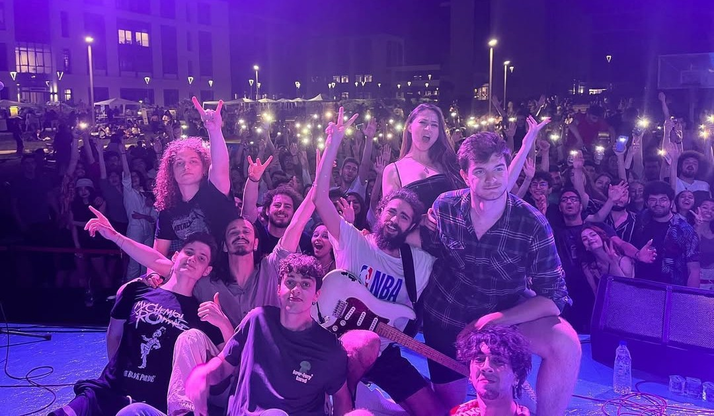
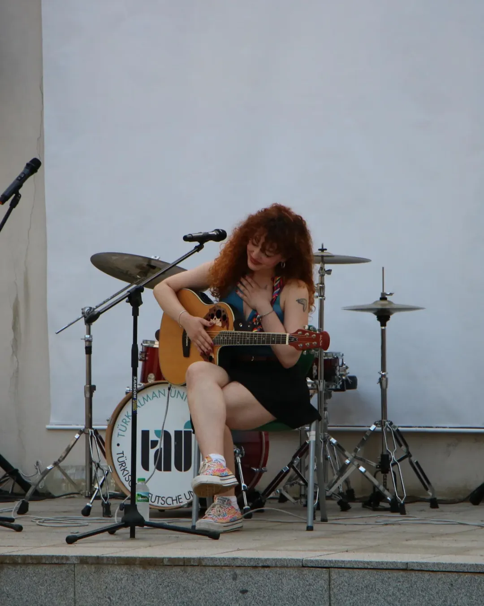
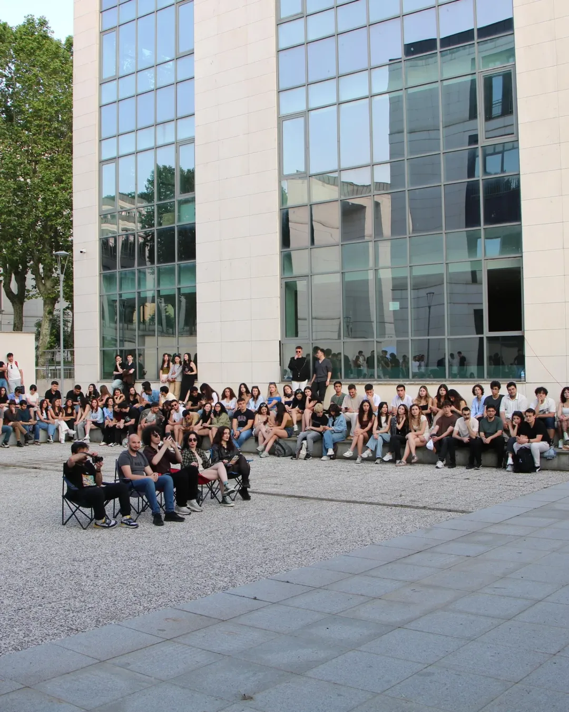
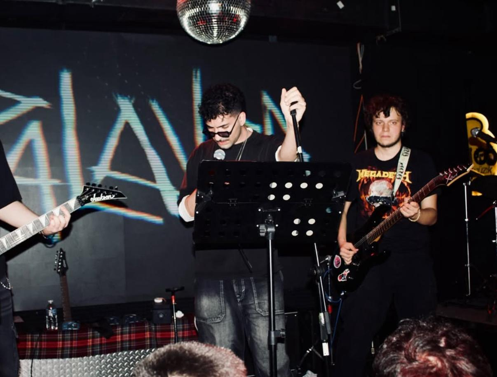
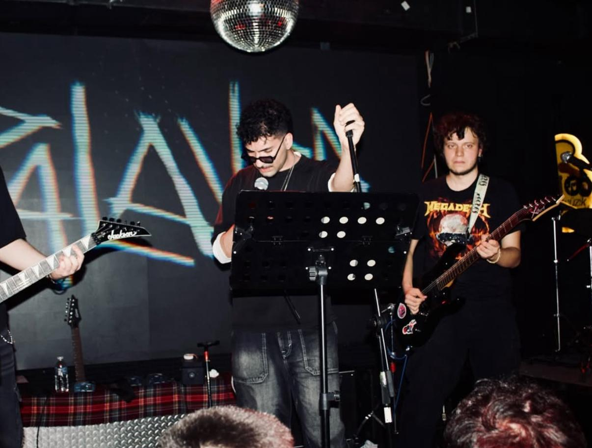
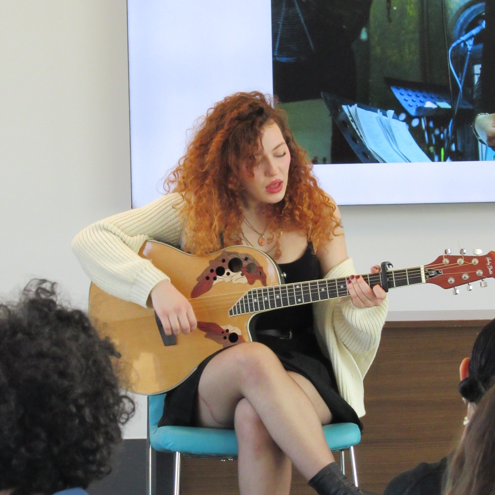
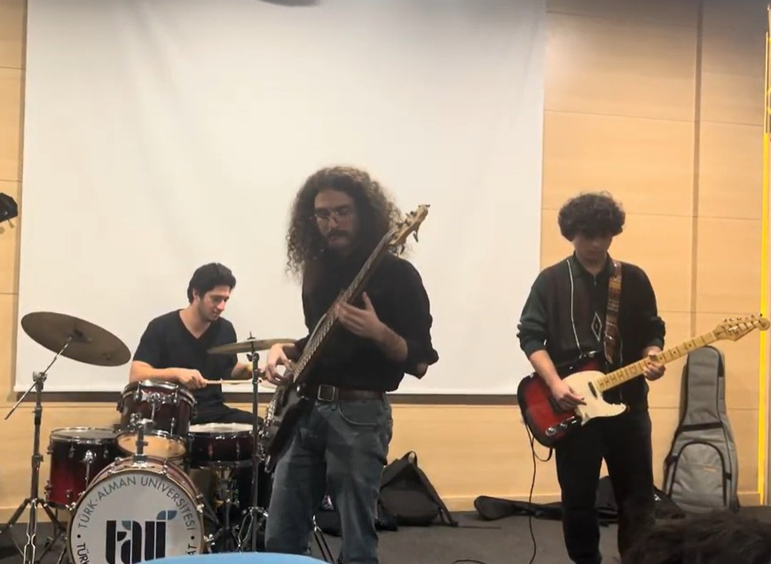

Hakkımızda
Türk-Alman Üniversitesi Müzik Kulübü, okul öğrencilerinin müzik kültürlerini geliştirmek, müzik paylaşımını ve üretimini teşvik etmek amacıyla 2016 yılında kurulan bir öğrenci organizasyonudur. Kulübümüz; jam session’lar, söyleşiler ve dönem içi konserler gibi düzenli faaliyetlerle aktif bir program yürütmektedir.
Öncelikli Hedeflerimiz
• Kulüp bünyesinde çeşitli müzik projeleri, podcastler ve içerikler üretmek
• Okul içinde profesyonel kullanım için uygun bir müzik stüdyosu kurmak
• Okulun kültürel kimliğine katkı sağlayan kalıcı projeler geliştirmek
Neler yapıyoruz?
-
Frühlingsfest ve Herbstfest: Üniversitemizde gelenekselleştirilmesi hedeflenen en büyük sosyal etkinliklerden bazıları.
-
Minifest: Öğrencilerin kampüste kendi imkanlarıyla organize ettiği bağımsız festivaller. 
-
Konserler ve Jam Etkinlikleri: Üniversitemizdeki öğrencilerin gruplarıyla birlikte sahne aldıkları etkinlikler.
 

-
Dinletiler: Kampüsün farklı noktalarında gerçekleştirdiğimiz akustik performanslar. 
Kimler katılabilir?
Seviye ve enstrüman şartlarını burada netleştirin.
- • Yeni başlayanlar veya deneyimliler
- • Enstrüman çalanlar veya vokaller
- • Dinleyici olarak desteklemek isteyenler
Nasıl katılınır?
Katılmak için 3 adım.
-
1
Formu doldurİlgi alanı, enstrüman (varsa) ve uygun gün/saat.
-
2
Tanışma buluşmasına gelKısa bir bilgilendirme + planlama.
-
3
Prova/Jam’e katılKüçük setlerle başlayıp büyütürüz.
Ekip
İsim Soyisim
İsim Soyisim
İsim Soyisim
İsim Soyisim
SSS
Sıkça Sorulan Sorular
Enstrüman çalmak şart mı?
Şart değil. Vokal, sosyal medya, sponsorluk veya organizasyon tarafında da katılım mümkün.
Seçme var mı?
Kulübe katılmak için herhangi bir eleme yok. İsteyen herkes katılım sağlayabilir.
Provalar ne zaman oluyor?
Provaların ilerlediği belirli bir takvim yok. Prova günü/saatleri prova öncesinde netleştirilip duyurulur.